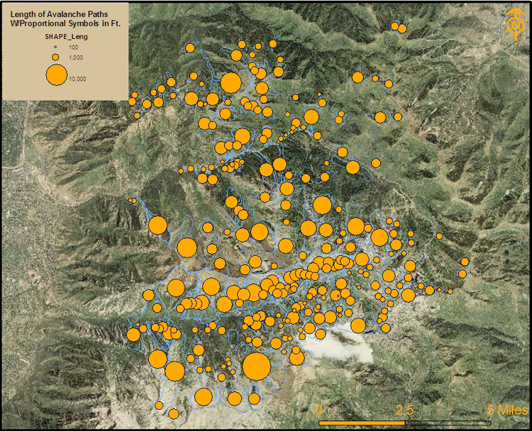

In this map, the slide path length data, in feet, was drawn with proportional symbols. This map is the least successfull in my eyes because I'm not really sure if I can see real values. I tried several ways to map the data but I have yet to find one that is successfull at showing true slide path length values.  |
|
Page Created by Patrick Gorman, Last Updated 05.08.14
|